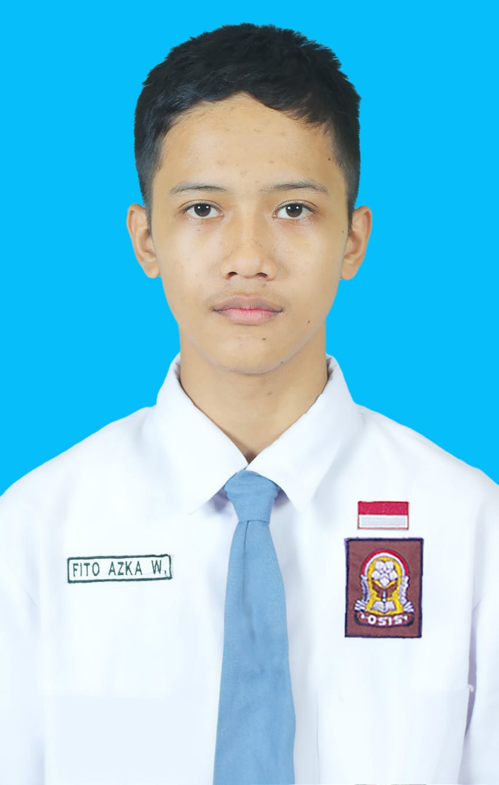
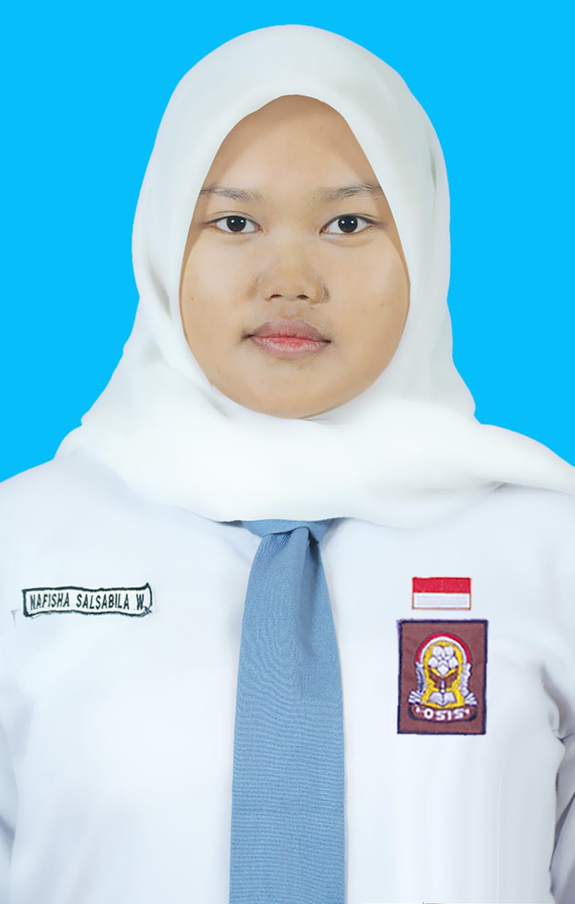
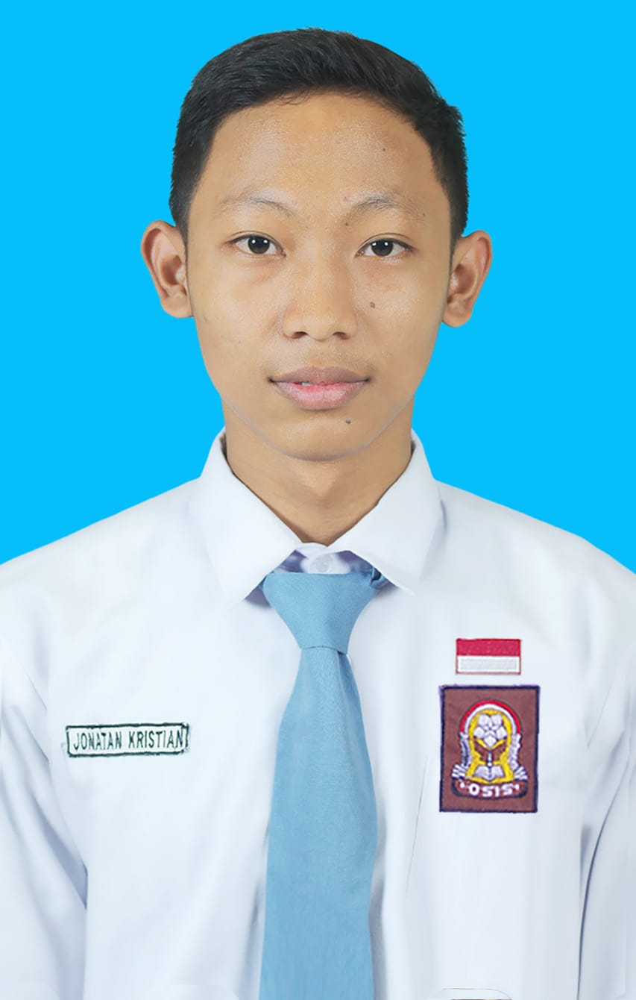

Website Kelas TKJ 2
SELAMAT DATANG DI KELAS TKJ 2
Kelas TKJ 2
Tahun 2024-2027
40 Siswa
27 Laki-laki, 13 Perempuan
Wali Kelas
BU ERIN
Lab. Komputer 1
Lantai 2
Semua Siswa
data 40 siswa kelas
Wali Kelas
Profil wali kelas
Struktur Kelas
babu kelas TKJ 2
Galeri
Foto perjalanan TKJ 2
Info lengkap nya bisa kunjungi media sosial kami!
Profil Wali Kelas

bu ester
Wali Kelas X TKJ 2
Mata Pelajaran
ilmupengetahuan alam & sosial (IPAS)
Gelar
sarjana pendidkan

bu erin
Wali Kelas XI TKJ 2
Mata Pelajaran
Pendidikan Kewarganegaraan (PKN)
Gelar
sarjana pendidikan

bu seka
Wali Kelas XII TKJ 2
Mata Pelajaran
Gelar
Daftar 40 Siswa Kelas XI TKJ 2
40 Siswa (27 Laki-laki, 13 Perempuan)
Struktur Kelas XI TKJ 2
Ketua Kelas
MUHAMMAD NURIL ARIFIN
Wakil Ketua
MUHAMMAD NASRUL MUKMIN

Sekretaris 1
LUSIANA ARISTIANTY K. D.

Sekretaris 2
FITO AZKA WIRADANA

Bendahara 1
NAFISHA SALSABILA W.

Bendahara 2
JONATAN KRISTIAN
Komentar ke Admin
Tulis pesan Anda dan kirim langsung ke WhatsApp admin